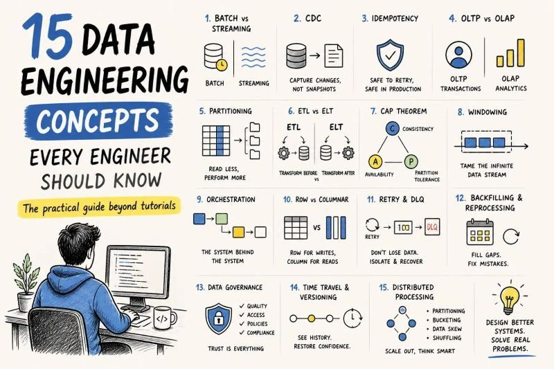
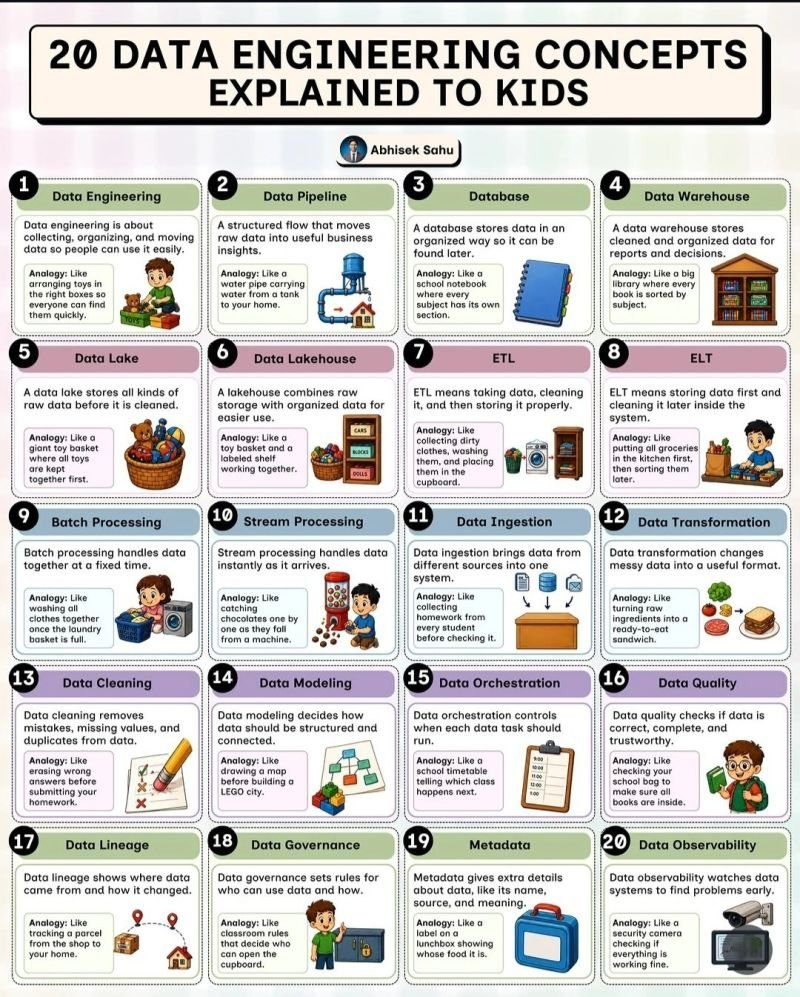
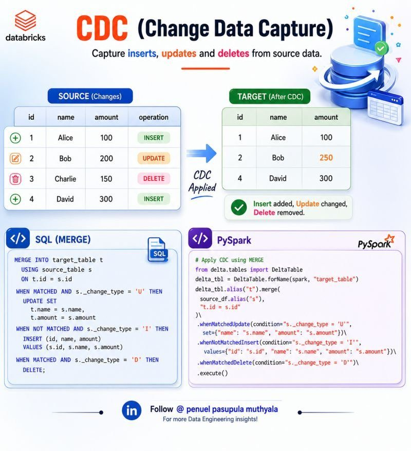
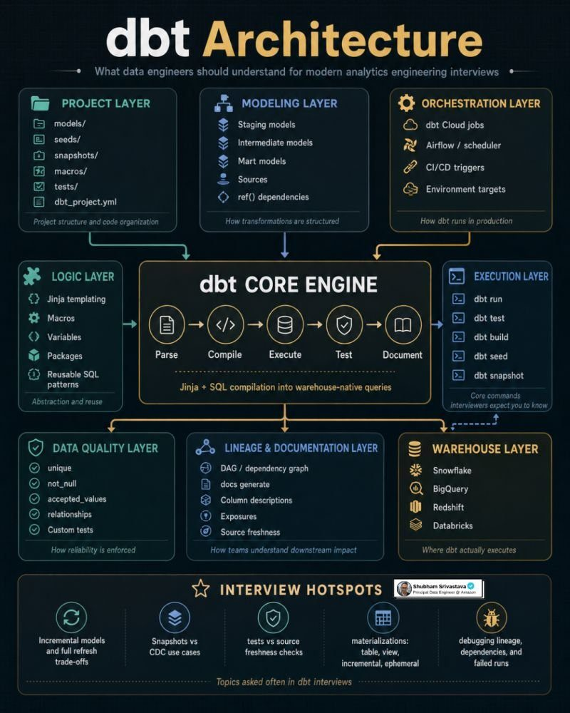
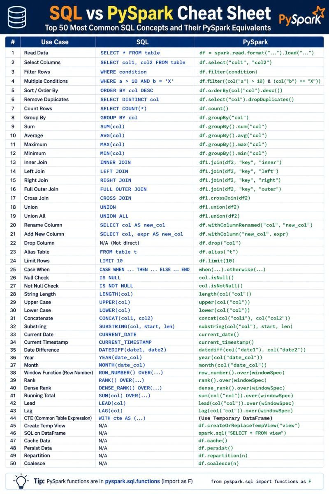
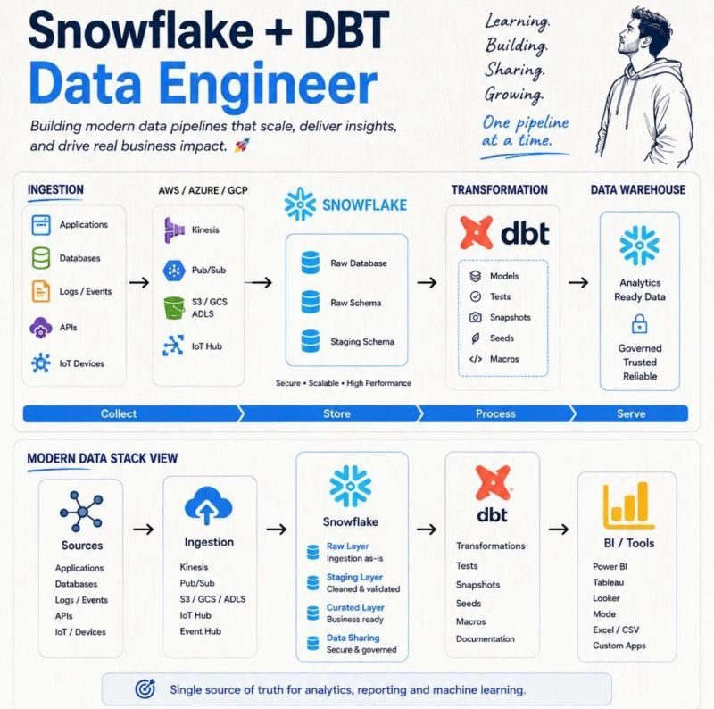
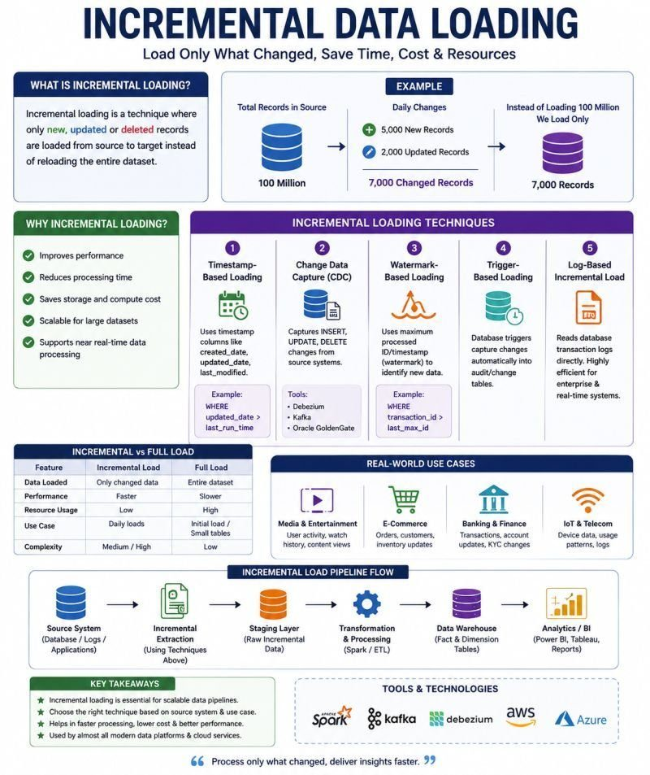
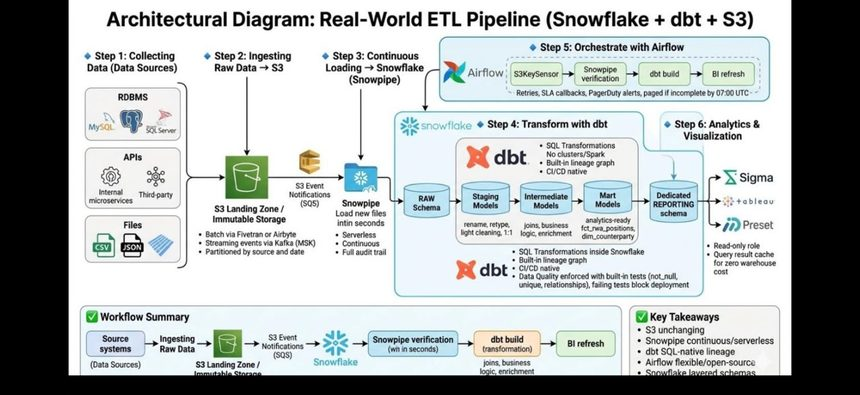

Referencia de estudio orientada a producción. Cada tema conecta con cómo un DE lo usa en un pipeline real: monitoreo, fallo, idempotencia y costo. Trade-offs explícitos en cada decisión técnica.
Antes de los detalles: el modelo mental completo de qué es DE y los conceptos transversales que aparecen en toda entrevista. Si te preguntan "explícame qué hace un DE", aquí está la versión de 30 segundos y la de profundidad.

Fig 0.1 · 15 conceptos que todo DE debe dominar — los transversales: idempotencia, CDC, particionamiento, OLTP vs OLAP, CAP, windowing, backfilling, time travel.
Los conceptos de la figura no son trivia: idempotencia (re-correr un job sin duplicar datos → la base de un pipeline confiable), CDC (capturar cambios, no snapshots completos), backfilling/reprocessing (corregir el pasado sin romper el presente) y CAP aparecen en cualquier diseño de sistema en entrevista senior.

Fig 0.2 · 20 conceptos base con analogías — útil para explicar a stakeholders no técnicos, una habilidad de seniority (traducir lo técnico al negocio).
Pitch de 30s para "¿qué hace un DE?": "Construyo y opero los sistemas que mueven datos desde múltiples fuentes hasta que están limpios, confiables y listos para analítica o ML. Mi trabajo no termina cuando el pipeline corre: soy dueño del monitoreo, los SLAs de calidad/frescura, la idempotencia ante fallos, y el costo de la infraestructura."
AInfraestructura Cloud
A1AWS Glue vs Lambda vs EC2 · EMR · Step Functions
¿Cuándo elegirías AWS Glue sobre Lambda o EC2?
AWS Glue es un servicio ETL serverless administrado ideal para batch sobre grandes volúmenes en S3, RDS o Redshift. Maneja Spark internamente sin configurar clústeres.
Servicio
Cuándo usarlo
Cuándo evitarlo
AWS Glue
Batch de grandes volúmenes, Spark sin ops, integración nativa con Glue Catalog
Procesos <5 min, jobs simples, latencia baja requerida
Lambda
Event-driven, triggers (SQS/Kinesis), transformaciones <15 min
Procesamiento masivo, estado persistente, dependencias grandes
EC2
Airflow workers, procesos muy largos, dependencias específicas
Casi todo lo demás; es el mayor ops overhead
EMR
Cargas Spark continuas >10 TB/día donde el costo justifica la complejidad
Equipos pequeños, pipelines esporádicos
Step Functions
Orquestar estados/servicios AWS (Glue→Lambda→Athena) con retries y branching nativo
DAGs complejos con dependencias ricas (ahí va Airflow/MWAA)
Tip ganador: Cita un ejemplo real: "Elegí Glue para ingestión batch diaria desde S3, Lambda para event-driven con SQS, y EC2 solo para Airflow workers." A escala muy alta, EMR es 40-60% más económico que Glue por hora de cómputo.
¿Cómo manejas el costo de Glue jobs en producción?
Worker type correcto (G.1X/G.2X) sin sobre-provisionar · job bookmarks para procesar solo datos nuevos · monitorear DPU-hours en CloudWatch + alertas en Cost Explorer · consolidar jobs pequeños frecuentes para reducir overhead de arranque.
A2Terraform: qué es, cómo funciona, en qué capa vive
Terraform es IaC declarativo (HCL) de HashiCorp para definir, provisionar y versionar infraestructura. En DE gestiona toda la capa de infraestructura del stack — vive antes de cualquier pipeline; sin infra no hay pipeline.
Ciclo de vida
Comando
Qué hace
terraform init
Descarga providers (AWS, GCP, Snowflake) y módulos. Una vez por proyecto.
terraform plan
Genera plan mostrando qué se crea/modifica/destruye. Nunca aplica.
terraform apply
Aplica el plan. Crea/modifica/destruye recursos reales.
terraform destroy
Destruye toda la infra definida. Con cuidado en prod.
State file
.tfstate mapea recursos definidos ↔ reales. En equipos: backend remoto (S3 + DynamoDB para locking).
En qué fase provisiona
Fase
Qué provisiona
Ejemplo
Storage
Buckets S3/GCS para Bronze/Silver/Gold
aws_s3_bucket "data-lake-bronze"
Compute
Glue jobs, EMR clusters, Lambda, Airflow (MWAA)
aws_glue_job, aws_mwaa_environment
Warehouse
Snowflake databases, schemas, warehouses, roles
snowflake_warehouse "TRANSFORM_WH"
IAM/Seguridad
Roles, policies, KMS keys, Secrets
aws_iam_role, aws_kms_key
Networking
VPCs, subnets, security groups
aws_vpc, aws_security_group
CI/CD
GitHub Actions runners, ECR para imágenes dbt/Airflow
Multi-cloud, mayor ecosistema, módulos reutilizables
Curva de aprendizaje; state file puede corromperse
Terraform vs CDK (Python)
Declarativo, más simple para infra pura
CDK es más potente para infra dinámica con lógica compleja
State remoto vs local
Remoto (S3+DynamoDB): seguro para equipos, locking
Local: riesgo de conflictos, no apto para equipos
Tip ganador:"Terraform provisiona todo: S3, IAM, Glue jobs, Snowflake schemas. Cero cambios manuales en consola. Infra inmutable: si algo cambia, se modifica el código y se aplica vía CI/CD."
A3Particionamiento: tipos, usos y trade-offs
El particionamiento divide un dataset grande en subconjuntos por un criterio (fecha, región) para reducir el volumen escaneado (partition pruning) → más rendimiento, menos costo.
Tipo / Tecnología
Ejemplo
Trade-off
Directorio Hive-style (S3/lake)
s3://lake/events/year=2024/month=01/day=15/
Mala elección de clave → partition explosion (millones de carpetas, metadata overhead)
BigQuery: columna fecha / rango / ingestion-time
PARTITION BY DATE(event_date)
Máx 4000 particiones. El clustering complementa, no reemplaza
Snowflake: micro-particiones auto + Clustering Keys
CLUSTER BY (fecha, region)
Reclustering tiene costo. Solo tablas grandes con patrones de filtro claros
Spark: repartition() / partitionBy() al escribir
df.write.partitionBy("fecha").parquet(...)
Demasiadas particiones → small files problem → tareas lentas
Postgres declarativo: RANGE / LIST / HASH
PARTITION BY RANGE (created_at)
Requiere mantenimiento manual de particiones futuras
Reglas para elegir la clave
Alta cardinalidad con filtros frecuentes: fecha es el candidato #1 en casi todos los casos.
Evita cardinalidad muy alta (user_id): demasiadas particiones, overhead de metadata.
Evita distribución sesgada (status='active' = 95% de filas): una partición gigante y el resto micro.
En Spark: partición ideal 128MB-1GB por archivo. 1TB → apunta a 1000-8000 particiones.
Combina partición por fecha + clustering por otra columna (BigQuery) para filtros dobles.
Decisión
Opción A
Opción B
¿Cuándo particionar?
Siempre en tablas >100M filas o >10GB en prod
Tablas pequeñas: no particionar (overhead innecesario)
Granularidad
Diaria: balance para la mayoría (365 part/año)
Horaria: solo si las queries filtran por hora
Small files
coalesce() antes de escribir (reduce archivos)
repartition() si necesitas más paralelismo (shuffle costoso)
Tip ganador:"Siempre pregunto: ¿cómo van a filtrar los analistas? Si filtran por fecha y región, particiono por fecha y clustering por región. Partition pruning es lo que hace que BigQuery no escanee petabytes."
BModelado de Datos
B1Star Schema vs Snowflake Schema
Aspecto
Star Schema
Snowflake Schema
Estructura
Fact + dims desnormalizadas (una capa)
Fact + dims normalizadas con sub-dimensiones
JOINs por query
Mínimos (1 join por dim)
Más JOINs (N niveles)
Redundancia
Alta (datos repetidos en dims)
Baja (cada atributo una vez)
Storage
Mayor (desnormalizado)
Menor (normalizado)
Rendimiento BI
Mejor (menos JOINs)
Peor (más JOINs)
Complejidad p/ analistas
Baja
Alta
Cuándo usarlo
Proyectos nuevos, BI, dbt Gold layer
Dims muy grandes, cambios frecuentes, modelos legacy
Tip ganador:"En proyectos nuevos siempre empiezo con Star Schema. El storage es barato en cloud y Looker/Tableau lo agradecen. Snowflake Schema solo con una razón de negocio muy clara."
B2Normalización: formas normales y cuándo aplicarlas
FN
Regla principal
Problema que resuelve
1FN
Cada celda contiene un valor atómico. Sin grupos repetidos.
Lecturas masivas > escrituras. JOINs costosos en columnar. Storage barato
Data Lake (S3 / Parquet)
NO — semi-estructurado
El esquema evoluciona; flexibilidad > normalización
Dims en DWH (Gold)
Parcialmente — Star desnormaliza dims
Rendimiento BI y simplicidad para analistas
Streaming (Kafka)
NO — planos / JSON
Latencia > normalización. Avro/Protobuf definen el contrato
Tip ganador:"En OLTP normalizo para integridad. En el warehouse desnormalizo deliberadamente (Star) porque el storage es barato y los JOINs son el cuello de botella en queries de millones de filas."
B3SCDs + Change Data Capture (CDC)
Un SCD es una dimensión cuyo valor cambia lentamente (región de un cliente, cargo de un empleado). El tipo define cómo gestionar el historial.
Tipo
Mecanismo
Ventaja
Desventaja
Cuándo usar
0
No cambia; valor original permanece
Máxima simplicidad
No refleja cambios
Atributos inmutables (fecha de nacimiento, fecha de alta)
1
Sobrescribe el valor anterior, sin historial
Simple, sin filas extra
Pierde historial
Correcciones de error donde el histórico no importa
2
Nueva fila por cambio + is_current + valid_from/valid_to
Historial completo, análisis temporal exacto
Tabla crece; JOINs filtran is_current
Análisis histórico ("¿qué región tenía cuando compró?")
3
Columna valor_anterior
Muy simple, sin filas extra
Solo el cambio inmediato anterior
Cuando solo importa el penúltimo valor
4
Tabla de historial separada + tabla de estado actual
Fig B.1 · SCD Type 2 en PySpark — expira el registro viejo (end_date, is_current='N'), inserta el nuevo activo. Usa finance date como fecha efectiva y Delta para ACID.
CDC — capturar inserts/updates/deletes, no snapshots completos

Fig B.2 · CDC aplicado con MERGE: _change_type 'I'/'U'/'D' → whenMatchedUpdate / whenNotMatchedInsert / whenMatchedDelete. Patrón base de incremental loading idempotente.
sql · MERGE (upsert idempotente)MERGE INTO dim_cliente AS target
USING staging_changes AS s ON target.cliente_id = s.cliente_id AND target.is_current = TRUEWHEN MATCHED AND s._op = 'U'THEN-- cerrar versión actualUPDATE SET target.is_current = FALSE, target.valid_to = s.event_ts
WHEN MATCHED AND s._op = 'D'THENUPDATE SET target.is_current = FALSE, target.valid_to = s.event_ts
WHEN NOT MATCHED THENINSERT (cliente_id, region, valid_from, valid_to, is_current)
VALUES (s.cliente_id, s.region, s.event_ts, NULL, TRUE);
CDC en producción: Debezium / Kafka leen el WAL/binlog de la DB origen → eventos a un topic → consumer aplica MERGE en el lake/warehouse. Snowflake lo hace nativo con Streams + Tasks (ver sección I3). DynamoDB Streams y MongoDB change streams para NoSQL.
Tip ganador:"SCD Tipo 2 es el más común. Con dbt snapshots solo defino la clave y la columna de timestamp; dbt gestiona el MERGE y las columnas valid_from/valid_to. Para CDC real-time uso Streams en Snowflake o Debezium→Kafka."
B4Data Vault: qué es y cuándo usarlo
Metodología de modelado para DWH empresariales (Dan Linstedt), orientada a auditoría, escalabilidad e integración de múltiples fuentes con cambios frecuentes.
Componente
Qué almacena
Características
Ejemplo
Hub
Claves de negocio (business keys)
Sin atributos descriptivos. Solo clave + metadata de carga. Inmutable
hub_cliente: cliente_bk, load_date, record_source
Link
Relaciones entre Hubs
Captura cuándo dos entidades se relacionaron. Inmutable
lnk_pedido_cliente: pedido_hk, cliente_hk
Satellite
Atributos descriptivos con historial
Mutable. Una fila por cambio. load_date + end_date
sat_cliente_info: nombre, email, region, end_date
Dimensión
Data Vault
Star Schema
Cuándo preferir DV
Auditoría
Total: cada registro con source, load_date, hash_key
Limitada
Requisitos regulatorios estrictos (GDPR/HIPAA)
Integración multi-fuente
Excelente: N fuentes con misma business key
Complejo
CRM + ERP + e-commerce → misma entidad cliente
Resiliencia a cambios
Nuevos satellites sin tocar el core
Requiere ALTER TABLE o rediseño
Fuentes que cambian schema con frecuencia
Simplicidad de queries
Alta: joins Hub + Satellite(s) para leer
Baja
Si analistas consultan directo, Star es mejor
Velocidad de desarrollo
Lenta al inicio (definir hubs/links/sats)
Rápida
Si el time-to-market es crítico → Star
Tip ganador:"Data Vault solo en enterprise con múltiples fuentes heterogéneas y auditoría estricta. Para la mayoría, Medallion + Star Schema es más simple y rápido de entregar."
B5Data Modeling: el proceso completo
1. Entender el negocio → ¿qué preguntas responden los analistas? entidades core, métricas. Entrevistas con stakeholders
2. Modelo conceptual → entidades + relaciones alto nivel (ER). Lenguaje de negocio, no técnico
3. Modelo lógico → atributos, tipos lógicos, PK/FK, cardinalidades. Independiente del motor
4. Modelo físico → motor específico (Snowflake/BQ): tipos reales, clustering, particionamiento, materialización
5. Documentación → diccionario de datos. dbt docs lo genera desde el YAML
6. Validación → revisión con analistas/DS. ¿responde el negocio? ¿casos edge cubiertos?
7. Evolución → schema evolution: agregar columnas, deprecar tablas sin romper consumers
Tip ganador:"El modelado no es solo diseñar tablas. Es entender el negocio primero, validar con stakeholders y diseñar para evolución: el modelo de hoy cambiará en 6 meses."
CTransformación y Calidad de Datos
C1dbt: función, capas, arquitectura
dbt (data build tool) es la herramienta estándar de transformación en ELT. Gestiona la capa T: transformar datos ya cargados en el warehouse en modelos analíticos. No es orquestador ni herramienta de ingestión.

Fig C.1 · Arquitectura dbt — el core engine (Parse→Compile→Execute→Test→Document) compila Jinja+SQL a queries nativas del warehouse. Interview hotspots: incremental vs full refresh, snapshots vs CDC, tests vs source freshness, materializations, debugging de lineage.
Capa
Rol
Materialización
stg_ Staging
1:1 sobre fuentes crudas. Renombrado, casting, limpieza básica
view
int_ Intermediate
JOINs y lógica de negocio intermedia. No expuestos a BI
view o ephemeral
fct_/dim_ Marts
Hechos y dimensiones listos para consumo BI
table o incremental
Materializations — el trade-off central
Tipo
Cuándo
Costo
view
Lógica ligera, datos siempre frescos, staging
Recalcula en cada query (lento si downstream pesado)
table
Marts consultados muchas veces; recálculo aceptable
Re-materializa todo en cada dbt run
incremental
Tablas grandes append/upsert; solo procesar lo nuevo
Complejidad: is_incremental() + unique_key; riesgo de drift → full-refresh periódico
ephemeral
CTE reutilizable que no quieres materializar
Se inyecta en el SQL del consumidor; no debuggeable solo
sql · incremental{{ config(materialized='incremental', unique_key='venta_id') }}
SELECT * FROM {{ ref('stg_ventas') }}
{% if is_incremental() %}
WHERE updated_at > (SELECTMAX(updated_at) FROM {{ this }})
{% endif %}
C2Data Quality con dbt en producción
Estrategia de 4-5 capas: tests de schema → tests SQL custom → severidad/alertas → paquetes estadísticos → CI/CD.
DQ fuera de dbt (Python, Spark, Glue). Suite standalone
Más overhead de configuración
Soda Core
Alternativa OSS a GE. Integra dbt/Airflow, alertas nativas
Menor ecosistema que GE
Monte Carlo / Bigeye
Detección automática de anomalías (ML-based)
Costo alto. Overkill para equipos pequeños
Tip ganador:"En prod uso 3 capas: dbt tests en CI/CD (bloquean PRs con severity:error), dbt-expectations para validaciones estadísticas, y on_failure_callback de Airflow a Slack. Monte Carlo solo en empresas con muchos pipelines críticos."
C3Python vs SQL vs PySpark
Herramienta
Cuándo
Cuándo NO
SQL
Transformaciones set-based en el warehouse (dbt). Default para la capa T
Lógica iterativa, llamadas a APIs, ML
Python
Ingestión, orquestación (Airflow), APIs, glue code, ML
Joins masivos in-memory sobre datos > RAM
PySpark
Datos que no caben en una máquina; transformaciones distribuidas TB+
Datasets pequeños (<1-5GB): pandas/SQL son más simples y rápidos

Fig C.2 · Equivalencias SQL ↔ PySpark (top 50). WHERE→.filter(), GROUP BY→.groupBy(), window functions→.over(windowSpec). Funciones en pyspark.sql.functions as F.
Trade-off de seniority: "Default a SQL/dbt por mantenibilidad y porque el warehouse optimiza mejor. Bajo a PySpark solo cuando el volumen lo exige o necesito lógica que SQL no expresa bien (UDFs complejas, ML). No uso Spark para 2GB de datos — es over-engineering y ops overhead."
DOptimización SQL y Bases de Datos
D1Optimización de queries — pasos
1.EXPLAIN ANALYZE → leer el plan real, no asumir
2. Filtrar temprano (predicate pushdown) → menos filas aguas arriba
3. Evitar SELECT * → en columnar lees solo columnas necesarias
4. Índices (OLTP) / clustering keys (OLAP)
5. Evitar funciones sobre columnas indexadas → WHERE YEAR(fecha)=2024 rompe el índice; usa rangos
6. Particionamiento + partition pruning
7. Materializar intermedios reutilizados
D2Índices: cuándo usarlos y cuándo evitarlos
Tipo
Descripción
Cuándo usar
B-tree (default)
Árbol balanceado. =, <, >, BETWEEN, ORDER BY
Mayoría de casos OLTP (PostgreSQL, MySQL)
Hash
Solo igualdad exacta. Más rápido que B-tree para =
Joins por igualdad en columnas de alta cardinalidad
GIN
Arrays, JSONB, full-text search
Columnas JSONB en PostgreSQL, búsqueda de texto
GiST
Tipos geométricos/geoespaciales, rangos
PostGIS, rangos de fechas que se solapan
Bitmap
Baja cardinalidad en OLAP
status, region — pocos valores distintos
Clustering Key (Snowflake)
No es índice clásico. Ordena físicamente micro-partitions
Tablas >1TB con filtros frecuentes por fecha/región
Compuesto
Múltiples columnas. El orden importa
(region, fecha) cubre queries sobre region y/o fecha
✓ Crear índice cuando
columna frecuente en WHERE/JOIN/ORDER BY · ratio SELECT:write >10:1 · alta cardinalidad · tabla >100K filas · FKs en fact tables
✗ Evitar índice cuando
tablas <10K filas · baja cardinalidad (boolean) · muchas escrituras (overhead) · funciones en WHERE · warehouses columnar (no usan B-trees) · índices redundantes
Contexto
¿Índices?
OLTP (PostgreSQL, MySQL)
SÍ — esenciales para PK, FK, búsqueda frecuente
OLAP columnar (Snowflake, BQ)
NO — usar clustering keys + particionamiento
Redshift
Parcialmente — SORTKEY, DISTKEY son el equivalente
Data Lake (S3/Parquet)
NO — partition pruning + predicate pushdown
Tip ganador:"Los índices son para OLTP. En columnar (Snowflake/BigQuery) el B-tree no aplica: la estrategia es particionamiento, clustering keys y evitar SELECT *."
D3Data Skew y Query Hints
Data skew: distribución desigual entre particiones/tareas de un job distribuido. Unas pocas tareas procesan el 90% mientras el resto está ocioso → cuello de botella.
Tipo de skew
Descripción
Síntoma
Solución
Skew en particiones (join/groupby)
Una clave concentra muchas filas (user_id='unknown' = 50M)
Una tarea tarda 10x más en Spark UI
Salting: sufijo aleatorio a la clave; join en dos fases
Skew en escritura
partitionBy() genera particiones muy desiguales
Parquet de 1MB junto a 10GB
repartition() antes de escribir con columna uniforme
Small files problem
Demasiadas particiones con archivos <128MB
Muchos archivos → metadata overhead → queries lentas
coalesce(); compactación periódica
Skew en streaming
Un shard de Kinesis/Kafka recibe más tráfico
Lag creciente en un shard específico
Aumentar shards; clave de partición distribuida
python · salting para skew en joins# user_id='unknown' tiene 80M filas → skewfrom pyspark.sql import functions as F
n_salts = 20
df_large = df_large.withColumn('k_salted',
F.concat(F.col('user_id'), F.lit('_'), (F.rand()*n_salts).cast('int').cast('string')))
# replicar tabla pequeña con todos los salts
df_salt = spark.createDataFrame([{'salt': i} for i in range(n_salts)])
df_small_s = df_small.crossJoin(df_salt).withColumn('k_salted',
F.concat(F.col('user_id'), F.lit('_'), F.col('salt').cast('string')))
result = df_large.join(df_small_s, 'k_salted')
Query Hints — último recurso
Hint
Motor
Propósito
Cuándo
/*+ BROADCAST(t) */
Spark / BigQuery
Fuerza broadcast join (envía tabla pequeña a todos los workers)
Tabla <1GB que el optimizador no detecta como pequeña
/*+ REPARTITION(n) */
Spark
Fuerza N particiones
Controlar paralelismo explícitamente
/*+ COALESCE(n) */
Spark
Reduce particiones sin shuffle completo
Reducir small files antes de escribir
/*+ SKEW(t) */
Databricks / Delta
Manejo automático de skew en el join
Join con skew conocido en Databricks
OPTION (HASH JOIN)
SQL Server
Fuerza hash join en vez de nested loop
Joins de conjuntos medianos-grandes
USE/FORCE INDEX
MySQL / PostgreSQL
Fuerza un índice específico
Cuando el optimizador ignora un índice mejor
/*+ PARALLEL(8) */
Oracle
Paralelismo a 8 hilos
Queries batch grandes en Oracle DWH
Tip ganador:"Los hints son el último recurso. Primero actualizo estadísticas (ANALYZE), reviso el EXPLAIN plan y ajusto particionamiento/clustering. Un hint resuelve el síntoma hoy pero falla cuando los datos crecen."
Estructura del esquema. Versionado con dbt o migraciones
DML
INSERT, UPDATE, DELETE, MERGE
MERGE es el más crítico en pipelines idempotentes
DCL
GRANT, REVOKE, CREATE ROLE
Permisos. Un DE senior domina el modelo de RBAC del warehouse
TCL
BEGIN, COMMIT, ROLLBACK, SAVEPOINT
Atomicidad en operaciones críticas (ACID)
DQL
SELECT con CTEs, window functions, subqueries
Analítica y validación
sql · snowflake admin-- RBAC: principio de mínimo privilegioCREATE ROLE analyst_role;
GRANT USAGE ON DATABASE analytics TO ROLE analyst_role;
GRANT SELECT ON ALL TABLES IN SCHEMA analytics.gold TO ROLE analyst_role;
-- monitorear queries lentasSELECT query_id, execution_time/1000 seg, bytes_scanned/1e9 gb, credits_used
FROM snowflake.account_usage.query_history
WHERE execution_time > 60000ORDER BY execution_time DESC;
-- Time Travel: recuperar datos borradosSELECT * FROM fct_ventas AT(OFFSET => -3600);
ISnowflake Deep Dive
Sección nueva. Snowflake aparece en tu stack y es el warehouse más preguntado en entrevistas senior. Aquí: la arquitectura que lo distingue, comparación honesta vs competidores, y las features que un DE debe operar.

Fig I.1 · Snowflake como núcleo del Modern Data Stack: ingestión (Kinesis/Pub-Sub/S3) → Raw/Staging/Curated → dbt (models, tests, snapshots, macros) → BI. Single source of truth para analytics + ML.
I1Arquitectura: 3 capas desacopladas
El diferenciador fundamental de Snowflake es la separación de almacenamiento y cómputo (con una tercera capa de servicios). Esto es lo que debes poder explicar en 60 segundos.
Capa
Qué es
Por qué importa al DE
1. Storage
Datos en object storage del cloud (S3/GCS/Azure Blob), en micro-particiones columnar comprimidas e inmutables (~50-500MB)
Pagas storage barato y separado del cómputo. Inmutabilidad → Time Travel y zero-copy clone
2. Compute
Virtual Warehouses: clusters MPP independientes (XS→6XL). Cada uno lee del mismo storage sin contención
Aíslas cargas: un WH para ELT, otro para BI, otro para ad-hoc. Escalas/suspendes cada uno por separado
3. Cloud Services
Cerebro: metadata, optimizer, gestión de transacciones, seguridad, result cache
El pruning por metadata (min/max por micro-partición) evita escanear datos sin tocar disco
Micro-particiones vs particionamiento manual: No defines particiones en Snowflake — las crea automáticamente al cargar. La metadata (min/max, distinct counts por columna y micro-partición) permite partition pruning automático. Para tablas >1TB con un patrón de filtro claro, agregas CLUSTER BY y Snowflake reordena físicamente (con costo de reclustering).
Virtual Warehouses — el modelo de cómputo
T-shirt sizes: cada salto duplica créditos/hora (XS=1, S=2, M=4, L=8...). Más grande ≠ siempre mejor: una query mal escrita no mejora con más cómputo.
AUTO_SUSPEND (suspende tras N segundos ociosos) + AUTO_RESUME → no pagas WH parado. Billing por segundo (mínimo 60s).
Multi-cluster warehouses: escalan horizontalmente para concurrencia (muchos usuarios BI simultáneos), no para una sola query pesada.
I2Snowflake vs BigQuery vs Redshift vs Databricks
Dimensión
Snowflake
BigQuery
Redshift
Databricks
Modelo de cómputo
Virtual warehouses (gestionas tamaño/suspend)
Fully serverless (sin warehouse que gestionar)
Node-based (RA3 separa storage); más ops
Clusters Spark (gestionas)
Pricing
Créditos = tiempo de cómputo + storage aparte
Por bytes escaneados (on-demand) o slots (flat-rate)
Por nodo/hora (o serverless)
DBUs (cómputo) + cloud infra
Multi-cloud
Sí (AWS/GCP/Azure)
Solo GCP
Solo AWS
Sí
Separación storage/compute
Nativa, total
Nativa
RA3 sí; nodos clásicos no
Lake + compute
Fuerte en
SQL analytics, concurrencia aislada, data sharing
Serverless puro, escala instantánea, GCP-native
Stack AWS legado, integración Redshift Spectrum
ML, streaming, Spark, lakehouse open (Delta)
Concurrencia
Excelente (multi-cluster aísla cargas)
Buena (slots)
Limitada sin tuning (WLM)
Depende del cluster
Semi-estructurado
VARIANT + FLATTEN nativo
Nested/repeated, JSON funcs
SUPER type
Spark structs/JSON
Trade-off honesto para entrevista:"BigQuery elimina la gestión de cómputo pero el costo por bytes escaneados castiga el SELECT * y exige disciplina de particionamiento. Snowflake me da control granular de cómputo y aislamiento de cargas, ideal cuando tengo workloads heterogéneos (ELT + BI + ad-hoc). Databricks lo preferiría si el peso fuera ML/streaming sobre un lake abierto. No hay ganador absoluto: depende del cloud, el equipo y el mix de cargas."
I3Features clave que un DE debe operar
Feature
Qué resuelve
Uso en pipeline
Time Travel
Consultar/restaurar datos hasta 90 días atrás
Recuperar de un MERGE erróneo: AT(TIMESTAMP=>...), UNDROP TABLE
Zero-copy Clone
Clonar DB/schema/tabla sin copiar datos (metadata only)
Crear entorno dev/test instantáneo sin costo de storage hasta que diverja
Streams
CDC nativo: registra inserts/updates/deletes desde un offset
Base de incremental loading sin Debezium
Tasks
Scheduler nativo (cron o triggered) para SQL/procedures
Stream + Task = pipeline CDC end-to-end dentro de Snowflake
Dynamic Tables
Tablas declarativas que se refrescan solas según LAG
Reemplazan pipelines incremental manuales; declaras el resultado, no el cómo
Snowpipe
Ingestión continua serverless desde stage (auto-trigger por evento S3)
Cargar archivos en segundos sin warehouse dedicado
Snowpark
API DataFrame (Python/Scala/Java) ejecutada en el warehouse
Lógica Python sin sacar datos; UDFs/UDTFs, ML in-warehouse
Secure Data Sharing
Compartir datos sin copiarlos (otra cuenta lee tu storage)
Data products entre equipos/empresas sin ETL de salida
VARIANT
Tipo semi-estructurado para JSON/Avro/Parquet
FLATTEN para explotar arrays anidados en queries
sql · Stream + Task = CDC nativoCREATE STREAM str_clientes ON TABLE raw.clientes; -- captura cambiosCREATE TASK t_merge_clientes
WAREHOUSE = transform_wh
SCHEDULE = '5 MINUTE'WHEN SYSTEM$STREAM_HAS_DATA('str_clientes') -- solo corre si hay cambios → ahorra créditosASMERGE INTO dim_clientes t USING str_clientes s ON t.id = s.id ...;
I4Costos y gobierno — lo que demuestra seniority
Control de costo
AUTO_SUSPEND agresivo (60s) · right-size del WH (no sobre-provisionar) · Resource Monitors con límites de créditos + alertas · separar WH por carga · result cache (24h gratis) · evitar SELECT * (lee menos columnas)
Gobierno
RBAC jerárquico (ACCOUNTADMIN → SYSADMIN → roles funcionales → PUBLIC) · Dynamic Data Masking para PII · Row Access Policies · account_usage para auditoría y FinOps
Anti-patrón clásico: usar un solo warehouse XL para todo "por si acaso". Resultado: pagas cómputo grande para queries triviales y no aíslas cargas. Correcto: WH chico con multi-cluster para BI, WH mediano para ELT con auto-suspend, y resource monitors que corten al exceder presupuesto.
Tip ganador:"En Snowflake el costo es cómputo × tiempo. Mi disciplina: auto-suspend a 60s, un warehouse por tipo de carga, resource monitors con alerta al 80% del presupuesto, y revisar account_usage.query_history semanalmente para cazar el top-20 de queries por créditos."
EArquitectura Moderna de Datos
E1Medallion Architecture
Patrón que organiza datos en capas de calidad progresiva. Popularizado por Databricks, aplica a cualquier stack.
🥉 BRONZE · Raw
Datos tal como llegan, sin transformar
Inmutable (append-only)
Parquet/JSON en S3/GCS/ADLS
Retención histórica completa
Tools: Fivetran, Airbyte, Glue, Kinesis
Objetivo: never lose data
🥈 SILVER · Cleaned
Limpio, validado, normalizado
Deduplicación, nulos, tipos correctos
Re-procesable desde Bronze
Calidad garantizada por dbt tests
Tools: dbt staging+intermediate, Spark
Objetivo: punto de verdad limpio
🥇 GOLD · Business
Modelos de negocio finales
Star Schema (fct_/dim_)
Re-procesable desde Silver
Optimizado para BI
Tools: dbt marts → Looker/Tableau/PBI
Objetivo: listo para decisiones
Atributo
Bronze
Silver
Gold
Alias
Raw / Landing
Cleaned / Trusted
Curated / Mart
Mutabilidad
Inmutable (append-only)
Re-procesable desde Bronze
Re-procesable desde Silver
Garantía
Sin garantías (tal cual)
Calidad por tests
Alta calidad, lista para decisiones
Consumidor
DE (debugging)
DE + Data Scientists
Analistas, BI, ejecutivos
Storage
Parquet/JSON raw en S3/GCS
Parquet + warehouse (schemas Silver)
Tablas en warehouse (Gold)
Tip ganador:"Si hay un bug en Silver, reproceso desde Bronze sin perder originales. Si hay un bug en Gold, reproceso desde Silver. La arquitectura en capas hace el debugging determinístico."
E2Herramientas por etapa del stack moderno
Etapa
AWS
GCP
Neutral / OSS
Ingesta batch
Glue, DMS, AppFlow, S3 Transfer
Dataflow, Transfer Service, Composer
Fivetran, Airbyte, Singer, Stitch
Streaming
Kinesis Data Streams, MSK, Firehose
Pub/Sub, Datastream
Apache Kafka, Debezium (CDC)
Storage (Bronze)
S3 + Glue Catalog
GCS + Dataplex
MinIO, Apache Iceberg (formato)
Processing / Transform
Glue (Spark), EMR, Lambda
Dataproc, Dataflow (Beam), Cloud Functions
Apache Spark, dbt-core
Warehouse (Silver/Gold)
Redshift, Snowflake on AWS
BigQuery, Snowflake on GCP
Snowflake (multi-cloud), Databricks
Orquestación
MWAA (Airflow), Step Functions
Cloud Composer, Workflows
Apache Airflow, Dagster, Prefect
Data Quality
Glue Data Quality, dbt tests
Dataplex DQ
Great Expectations, Soda, dbt tests
Visualización
QuickSight
Looker, Data Studio
Tableau, Power BI, Metabase, Superset
Catalog / Governance
Glue Catalog, DataZone
Data Catalog, Dataplex
DataHub, Apache Atlas, Amundsen, dbt docs
IaC
CloudFormation, CDK
Deployment Manager, Config Connector
Terraform (multi-cloud)
CI/CD
CodePipeline, CodeBuild
Cloud Build
GitHub Actions, GitLab CI, Jenkins
Secrets
Secrets Manager, SSM
Secret Manager
HashiCorp Vault
Monitoring
CloudWatch, X-Ray
Cloud Monitoring/Logging
Datadog, Grafana, Prometheus
Feature Store (ML)
SageMaker Feature Store
Vertex AI Feature Store
Feast, Tecton
Vector DB (RAG)
OpenSearch (k-NN)
Vertex AI Vector Search
Pinecone, Weaviate, pgvector, Qdrant
E3Data Lake vs Warehouse vs Lakehouse · Iceberg
Dimensión
Data Lake
Data Warehouse
Lakehouse
Storage
S3/GCS — muy barato
Propio del vendor — más caro
S3/GCS con formato tabla (Iceberg/Delta)
Schema
Schema-on-read (flexible)
Schema-on-write (rígido)
Schema-on-write con evolución
Formatos
Parquet, JSON, CSV, ORC
Propietario del vendor
Parquet + metadatos Iceberg/Delta
ACID
NO — riesgo de corrupción
SÍ — nativo
SÍ — vía Iceberg/Delta
Time Travel
NO (salvo Iceberg/Delta)
SÍ (Snowflake 90 días)
SÍ (configurable)
Perf queries
Bajo sin optimización
Alto (columnar nativo)
Alto (pruning + columnar en S3)
Caso de uso
ML training, archivos no estructurados
BI, reporting, SQL analytics
Todo: BI + ML + streaming desde un solo lugar
Stack típico
S3 + Parquet particionado
Snowflake, BigQuery, Redshift
S3 + Iceberg + Spark + Trino/Athena
¿Por qué Apache Iceberg está ganando?
ACID: escrituras atómicas sin corrupción ante fallos concurrentes.
Time travel: consultar histórico sin backups explícitos.
Schema evolution: agregar/renombrar/eliminar columnas sin reescribir todos los Parquet.
Hidden partitioning: las queries no necesitan conocer el esquema de partición; Iceberg lo gestiona.
Multi-engine: Spark, Flink, Trino, Athena, Snowflake, BigQuery leen Iceberg → sin vendor lock-in. Reemplaza a Delta fuera del ecosistema Databricks por ser verdaderamente open.
E4Incremental Loading
Cargar solo lo que cambió en vez de recargar todo. La técnica que hace los pipelines escalables y baratos.

Fig E.1 · 5 técnicas de carga incremental — timestamp-based (WHERE updated_at > last_run), CDC (Debezium/Kafka), watermark-based (WHERE id > last_max_id), trigger-based, log-based. Incremental vs full load: faster, lower cost, scalable.
Técnica
Mecanismo
Cuándo
Timestamp-based
WHERE updated_at > last_run_time
La fuente tiene columna confiable de modificación
Watermark-based
WHERE id > last_max_id (high watermark)
IDs monótonos crecientes; append-only
CDC (log-based)
Lee WAL/binlog → captura I/U/D
Necesitas deletes + cambios; Debezium, Streams
Trigger-based
Triggers de DB escriben a tabla de auditoría
Sistemas legacy sin log accesible
Idempotencia es obligatoria: un job incremental DEBE poder re-correrse sin duplicar. Patrón: MERGE con unique_key (upsert), o DELETE + INSERT por partición (delete-write atómico). Nunca un INSERT ciego — un re-run duplicaría filas.
E5Pipeline End-to-End

Fig E.2 · Pipeline real (S3 + Snowpipe + dbt + Airflow): fuentes → S3 landing (inmutable, particionado) → S3 event (SQS) → Snowpipe (carga continua) → dbt (staging→intermediate→mart) → schema de reporting → BI. Airflow orquesta con retries, SLA callbacks y PagerDuty si no termina a las 07:00 UTC.
Cómo lo explicas en entrevista (diseño en 6 pasos)
1. Ingesta → Fivetran/Airbyte batch o Kafka/MSK streaming → S3 landing particionado por fuente+fecha, inmutable
2. Carga → S3 event (SQS) dispara Snowpipe → tabla RAW (Bronze). Serverless, segundos, full audit trail
3. Transform → dbt: staging (rename/cast) → intermediate (joins/negocio) → marts (fct_/dim_)
4. Calidad → dbt tests + source freshness; tests con severity:error bloquean el deploy
5. Orquestación → Airflow: S3KeySensor → Snowpipe verify → dbt build → BI refresh. Retries, SLA, PagerDuty
6. Serving → schema de reporting (rol read-only) → Sigma/Tableau/Preset; result cache = costo cero en repetidas
Tip ganador: Cierra siempre con producción: "El pipeline tiene SLA de 07:00 UTC. Si Airflow no completa, dispara PagerDuty. Los tests de dbt con severity:error frenan el deploy si la calidad cae. Es idempotente: puedo re-correr cualquier día sin duplicar."
JEstadística aplicada al Data Engineering
Sección nueva. No estadística para reportes — estadística para operar infraestructura: decidir tamaños, detectar errores antes que el negocio, dimensionar joins y resolver skew. Esto es lo que separa a un DE que "mueve datos" de uno que diseña sistemas confiables.
J1Data Quality y detección de anomalías
La calidad de datos en producción es un problema estadístico. No validas con reglas fijas ("debe haber 1M filas") sino con distribuciones esperadas.
Técnica
Qué decide / detecta
Cómo se aplica
z-score / regla 3σ
Volumen de filas o nulos anómalo hoy vs histórico
Si row_count diario ~ N(μ,σ), alerta si |x−μ| > 3σ. Reemplaza umbrales fijos frágiles
IQR / percentiles
Outliers robustos (sin asumir normalidad)
Outlier si fuera de [Q1−1.5·IQR, Q3+1.5·IQR]. Para latencias usa p95/p99, no media
Control charts (SPC)
Drift gradual en métricas del pipeline
Media móvil + límites de control sobre row counts, null rate, freshness lag
PSI / KS test
Distribución de una columna cambió (drift de upstream)
PSI > 0.2 → cambio significativo; KS compara dos distribuciones. Dispara alerta de schema/semántica
Chi-square (SRM)
Sample Ratio Mismatch en pipelines de eventos/A-B
Si la proporción de buckets se desvía de lo esperado → bug de tracking aguas arriba
sql · DQ estadística en lugar de umbral fijo-- alerta si el conteo de hoy se sale de ±3σ del histórico de 30 díasWITH hist AS (
SELECTAVG(n) mu, STDDEV(n) sigma
FROM daily_counts WHERE dt BETWEEN CURRENT_DATE-31AND CURRENT_DATE-1)
SELECT today.n, h.mu, h.sigma,
ABS(today.n - h.mu) / NULLIF(h.sigma,0) AS z_score
FROM (SELECTCOUNT(*) n FROM fct_ventas WHERE dt = CURRENT_DATE) today, hist h
WHERE ABS(today.n - h.mu) / NULLIF(h.sigma,0) > 3; -- 0 filas = OK
dbt-expectations lo encapsula: expect_column_mean_to_be_between, expect_column_stdev_to_be_between, expect_column_values_to_be_between. Defines el rango estadístico una vez y el test corre en cada build.
J2Estadística para decisiones de infraestructura
Decisión
Herramienta estadística
Razonamiento
Granularidad de partición
Cardinalidad (distinct count) + histograma
Estimar distinct de la clave antes de particionar evita partition explosion y small files
Broadcast vs shuffle join
APPROX_COUNT_DISTINCT (HyperLogLog)
Estimar tamaño de la tabla pequeña → si cabe en memoria, broadcast; si no, shuffle
Detectar/resolver skew
Percentiles de filas por clave (p99 vs mediana)
Ratio p99/mediana alto → skew → decidir nº de salts (n_salts ≈ ratio)
Dimensionar warehouse / cluster
Regresión / time-series sobre crecimiento de volumen
Proyectar GB/día futuros → sizing y forecast de costo, no adivinar
Validar tabla gigante barato
Muestreo + intervalo de confianza
TABLESAMPLE en vez de full scan; CI te dice cuánta muestra necesitas
Relaciona items en cola, tasa de llegada y latencia → detectar backpressure y dimensionar shards
Regresión de performance post-deploy
Test de hipótesis sobre latencias
¿La latencia subió de verdad o es ruido? Compara distribuciones antes/después
sql · cardinalidad para decidir estrategia de join (barato y rápido)-- HyperLogLog: distinct aproximado sin full scan exactoSELECTAPPROX_COUNT_DISTINCT(join_key) AS distinct_keys,
COUNT(*) AS rows,
COUNT(*) / APPROX_COUNT_DISTINCT(join_key) AS avg_rows_per_key
FROM tabla_grande;
-- avg_rows_per_key muy alto en pocas claves → señal de skew → planear salting
Tip ganador:"Antes de optimizar un join lento, mido la distribución de la clave con APPROX_COUNT_DISTINCT y percentiles. Si el p99 de filas por clave es 100x la mediana, no es un problema de cómputo: es skew, y lo resuelvo con salting, no con un warehouse más grande."
J3Estructuras de datos probabilísticas
Cuando el volumen hace inviable lo exacto, lo aproximado con garantías estadísticas es la herramienta correcta.
Estructura
Qué resuelve
Garantía / Uso
HyperLogLog
Conteo de distintos en streams/TB
~2% error con KBs de memoria. APPROX_COUNT_DISTINCT en BQ/Snowflake
Bloom filter
Membresía (¿está esta clave?)
Sin falsos negativos; falsos positivos controlables. Dedup y join pruning a escala
Count-Min Sketch
Frecuencia de elementos en streaming
Detectar heavy hitters (claves calientes → skew) sin guardar todo
t-digest / quantile sketch
Percentiles aproximados en streams
p50/p95/p99 de latencia sin ordenar todo el dataset
Reservoir sampling
Muestra uniforme de un stream de tamaño desconocido
Validación/profiling de streams sin materializar todo
Conexión con tu trabajo: Spark usa Bloom filters internamente para dynamic partition pruning; Snowflake y BigQuery exponen HLL vía APPROX_*; estos sketches son cómo monitoreas distribución en un pipeline de streaming sin frenarlo.
KBases de Datos No Relacionales (NoSQL)
Sección nueva. NoSQL no es "anti-SQL": es un conjunto de modelos optimizados para patrones de acceso específicos donde el relacional no escala o no encaja. Como DE las verás como fuentes (CDC), como serving layer de baja latencia, y como online store de features.
K1Familias y cuándo usarlas
Familia
Modelo
Ejemplos
Patrón de acceso ideal
Evitar cuando
Key-Value
Clave → valor opaco
Redis, DynamoDB, Memcached
Lookups por clave ultra-rápidos, caché, sesiones, online feature store
Necesitas queries por valor o rangos complejos
Document
JSON/BSON anidado por colección
MongoDB, Firestore, Couchbase, DocumentDB
Entidades semi-estructuradas que evolucionan; agregados leídos juntos
Transacciones multi-documento complejas, muchos joins
En una partición de red (P, inevitable en sistemas distribuidos) debes elegir entre Consistencia (toda lectura ve la última escritura) y Disponibilidad (toda petición responde). No es un dial de 3 — P es obligatorio, eliges C o A.
Sistema
Tendencia CAP
Implicación
DynamoDB, Cassandra
AP (con consistencia tunable)
Disponible siempre; lecturas pueden ser eventuales salvo que pidas QUORUM/strong
MongoDB (replica set)
CP por defecto
Prioriza consistencia; failover puede rechazar escrituras brevemente
HBase, Bigtable
CP
Consistencia fuerte por región/tablet
PACELC completa CAP: incluso sin partición (Else), eliges entre Latencia y Consistencia. DynamoDB: eventual = baja latencia/barato; strongly consistent read = más latencia y costo. Como DE eliges el nivel según el caso de uso.
Modelado: el cambio mental clave
Relacional: modelas las entidades y normalizas; las queries se adaptan al modelo. NoSQL: modelas los patrones de acceso primero y denormalizas/duplicas para servirlos. Diseñar NoSQL como si fuera relacional (normalizado, esperando joins) es el error #1.
DynamoDB · single-table design
Partition key (distribuye) + Sort key (ordena/rango). GSI/LSI para accesos alternos. Cuida hot partitions: una PK con tráfico desigual = throttling. Diseña la PK para distribuir uniformemente (ligado a J2: distribución de la clave).
Cassandra · query-first
Partition key + clustering columns definen la tabla por query. Denormalizas: una tabla por patrón de lectura. Consistencia tunable (ONE/QUORUM/ALL). LSM-tree → write-optimized.
MongoDB · embed vs reference
Embeber si se lee junto y es acotado; referenciar si crece sin límite o se comparte. Aggregation pipeline para transformar. Sharding por shard key (mismo cuidado de distribución).
Vector DB · RAG
Chunking → embeddings → índice ANN (HNSW/IVF). Trade-off recall vs latencia. pgvector si ya tienes Postgres y el volumen es moderado; dedicada (Pinecone/Qdrant) a escala.
Tip ganador:"No es SQL vs NoSQL — es polyglot persistence. Uso Postgres para OLTP transaccional, Snowflake para OLAP, DynamoDB para lookups de baja latencia, y traigo todo al lake vía CDC. La pregunta no es 'cuál es mejor' sino 'qué patrón de acceso necesito servir'."
FSeguridad, Governance y Compliance
F1Data Governance: qué implica
Pilar
Qué es
Data Catalog
Inventario de assets con metadata: owner, descripción, linaje, clasificación PII, SLA. (DataHub, Collibra, dbt docs)
Data Lineage
Origen y transformaciones de cada dato. dbt lo genera desde ref()
Data Ownership
Cada dataset tiene owner. El DE es owner del pipeline; el negocio, de las definiciones
Data Classification
Etiquetar por sensibilidad (PII, confidencial, público) → determina acceso
Access Control
RBAC por función de negocio. Row-level y column-level security
Data Quality SLAs
Disponibilidad, frescura, exactitud, garantizados con tests y alertas
Retention Policies
Cuánto se guardan los datos. GDPR exige borrar PII innecesaria
Change Management
Modificar schemas sin romper consumers; deprecación con transición
Tip ganador:"Lo más alto-impacto que puede hacer un DE: 1) documentar en dbt docs, 2) clasificar columnas PII en el YAML, 3) RBAC en Snowflake/BigQuery, 4) un owner por dataset."
F2Seguridad + administración de usuarios
Pilares: IAM con mínimo privilegio · encriptación at-rest (KMS) e in-transit (TLS) · manejo de PII (clasificación → seudonimización → enmascaramiento) · aislamiento de red (VPC, private subnets, VPC Endpoints).
Detectar cuando la distribución prod cambia vs training (ver J1: PSI/KS)
Evidently AI, WhyLabs, Great Expectations
AI-assisted DE
LLMs para generar SQL, documentar tablas, detectar PII
GitHub Copilot, dbt Copilot, EverSQL
Tip ganador:"Mi rol como DE en ML: garantizar features consistentes entre training e inferencia (sin training-serving skew) y datos de entrenamiento de alta calidad. La calidad del dato determina la calidad del modelo."
HEstrategia para Ganar la Entrevista
H1Cómo demostrar seniority · Formato STAR
Diferenciador
Junior / Mid
Senior
Tecnología
"Uso dbt y Airflow"
"Con dbt y Airflow reduje el delivery de nuevos reportes de 2 semanas a 2 días"
Trade-offs
"Usé Kafka porque es potente"
"Evalué Kafka vs Kinesis: elegí Kinesis por ser managed en AWS, equipo pequeño, el ahorro en ops justificó el menor control"
Problemas
"Resolví un bug"
"Detecté proactivamente un skew que triplicaría costos. Implementé salting y bajé el costo a la mitad"
Impacto
"Mejoré el pipeline"
"Reduje el procesamiento de 4h a 35min, ahorrando $2,000/mes en compute"
Ownership
"Trabajé en X"
"Fui responsable de X de principio a fin: diseño, CI/CD, monitoreo y documentación"
STAR
Qué incluir
S — Situación
Contexto del problema de negocio. ¿Cuántos datos? ¿Qué impacto tenía?
T — Tarea
Qué se pidió y las restricciones (tiempo, presupuesto, equipo)
A — Acción
Decisiones técnicas y por qué. Menciona trade-offs evaluados
H2Preguntas al entrevistador (señales de seniority)
¿Cuál es el mayor dolor técnico del equipo de datos hoy y cómo se espera que esta persona ayude?
¿Cómo es el stack actual y hacia dónde evoluciona en los próximos 12 meses?
¿Tiene el equipo autonomía para proponer cambios de arquitectura? ¿Cómo se toman las decisiones técnicas?
¿Qué diferencia a los DEs más exitosos de este equipo del resto?
¿Cuál sería el proyecto prioritario en los primeros 90 días?
¿Cómo gestiona el equipo la deuda técnica en los pipelines existentes?
¿Cuál es la estrategia de observabilidad de datos hoy y qué mejorarían?
Orientadas a detectar: deuda técnica (preguntas 1, 6) · autonomía técnica (3) · madurez del stack (2, 7). Estas tres revelan si el rol vale la pena y si el equipo es senior.
H3Errores comunes y cómo evitarlos
Error
Por qué es problema
Cómo evitarlo
Responder en abstracto sin ejemplos
Parece teórico, no real
Ancla con un caso: "En mi último proyecto..."
No cuantificar impacto
"Mejoré el rendimiento" no diferencia
Prepara 3-5 logros con números: GB, $, %, minutos
"Siempre uso X" sin trade-offs
Señal de pensamiento rígido
"Depende: prefiero X porque... pero en Y usaría Z"
No preguntar al final
Poco interés / no estratégico
Lleva 3-4 preguntas de H2
Inventar o exagerar experiencia
El entrevistador técnico profundiza y lo detecta
"No lo he implementado, pero mi approach sería..."
Describir trabajo de equipo como individual
Se detecta como falta de honestidad
"Fui responsable de X. El equipo aportó Y. Mi contribución específica fue Z"
No mencionar monitoreo y operación
Los seniors piensan en producción
Siempre: ¿cómo lo monitoreas? ¿qué pasa si falla?
Honestidad (tu principio): Distingue siempre lo que has hecho en producción de lo conceptual. Ej: "Tengo experiencia hands-on con Pub/Sub en GCP — consumo de eventos, normalización de timezone, BigQuery, publishing a ArcSight/SIEM. Con SQS y Kinesis mi familiaridad es conceptual, no de producción; mi approach sería..." Esto construye más credibilidad que fingir.
NoSQL: patrón de acceso fijo, escala horizontal, baja latencia
Full vs Incremental load
Full: tablas pequeñas, carga inicial, simplicidad
Incremental: tablas grandes, costo, idempotente con MERGE
LTendencias del Mercado (2025–2026)
Sección nueva. Lo que dominó las conversaciones de Data Engineering en 2025–2026 y aparece cada vez más en entrevistas senior: formatos de tabla abiertos, el regreso del single-node, orquestación por activos, contratos de datos, streaming sobre lakehouse, linaje y la ola GenAI. Con criterio de cuándo usar cada cosa.
L1Open Table Formats: Iceberg vs Delta vs Hudi vs Paimon
¿Por qué Apache Iceberg se volvió el estándar de facto?
Los formatos de tabla abiertos ponen una capa de metadatos transaccional (ACID, time travel, evolución de schema/partición) sobre archivos Parquet en object storage. En 2026 Iceberg ganó la guerra: Snowflake (Polaris) y Databricks lo tratan como ciudadano de primera clase → fin del vendor lock-in. El diferenciador ya no es el formato, sino el catálogo REST.
Formato
Fuerte en
Catálogo / Ecosistema
Cuándo elegirlo
Apache Iceberg
Neutralidad multi-engine, hidden partitioning, evolución de partición sin reescribir
REST Catalog (Polaris, Unity OSS, Nessie, Glue)
Default 2026 para lakehouse abierto multi-engine
Delta Lake
Madurez, rendimiento en Spark/Databricks, Z-ordering
Unity Catalog
Stack centrado en Databricks
Apache Hudi
Upserts/CDC de baja latencia, índices a nivel de registro
Hive / Glue
Ingesta incremental con muchos updates
Apache Paimon
Streaming-first (LSM), integración nativa con Flink
Flink / Hive
Streaming lakehouse con Flink (ver L5)
El catálogo es la nueva batalla: el Iceberg REST Catalog (Apache Polaris graduó a proyecto top-level en 2026) desacopla el motor del metastore: Spark, Flink, Trino, DuckDB y Snowflake leen/escriben las MISMAS tablas con permisos centralizados. Pregunta de entrevista: "¿cómo evitas vendor lock-in en el warehouse?" → "tablas Iceberg + catálogo REST; el cómputo es intercambiable".
Tip ganador:"No discuto 'Iceberg vs Delta' en abstracto: ambos son ACID sobre Parquet. La decisión real es el catálogo y el motor. Elijo Iceberg + REST catalog para mantener Snowflake, Spark y DuckDB sobre el mismo storage sin copiar datos."
L2El renacimiento single-node: DuckDB & Polars
¿Cuándo NO necesitas Spark?
La lección de 2025–2026: la mayoría de los datasets caben en una máquina. DuckDB (OLAP embebido, single binary, lee Parquet/Iceberg en S3) y Polars (DataFrames en Rust, con motor de streaming out-of-core estabilizado en 2026) procesan decenas–cientos de GB en un nodo, sin el overhead operativo ni el costo de un clúster Spark.
Herramienta
Qué es
Sweet spot
Límite
DuckDB
OLAP SQL embebido ("SQLite para analítica")
Consultas ad-hoc, transformación local, tests de dbt, leer Iceberg/Parquet en S3
No es servidor multi-usuario concurrente
Polars
DataFrame columnar en Rust, lazy + streaming
Pipelines Python que excedían pandas; out-of-core con sink_iceberg/sink_delta
Ecosistema menor que pandas; curva de la API lazy
PySpark
Cómputo distribuido
Datos > una máquina (TB+), shuffles masivos
Overhead/coste injustificado para <100GB
Anti-patrón 2026: levantar un clúster Spark para 5GB "por si crece". Pagas cómputo distribuido y ops para algo que DuckDB resuelve en segundos en un laptop. Correcto: empieza single-node (DuckDB/Polars); sube a Spark solo cuando el volumen lo exija de verdad.
Tip ganador:"Mi heurística: <100GB → DuckDB/Polars en un nodo; TB+ o shuffles enormes → Spark. El default ya no es distribuido; es la máquina más simple que cumpla el SLA."
L3Orquestación moderna: Airflow 3 vs Dagster vs Prefect
Airflow sigue dominando, pero el paradigma se mueve de tareas a activos de datos (data assets): declaras QUÉ tabla debe existir y su frescura, no la secuencia de pasos. Airflow 3 (2025) sumó scheduling por datasets/assets y ejecución remota; Dagster nació asset-first y crece de abajo hacia arriba en equipos pequeños.
Orquestador
Modelo
Fuerte en
Trade-off
Airflow 3
Tareas (DAGs) + datasets/assets
Ubicuo, ecosistema enorme, madurez enterprise
Boilerplate; el modelo task-first arrastra deuda
Dagster
Software-defined assets (asset-first)
Linaje nativo, testing, dev local, observabilidad
Ecosistema menor; reentrenar al equipo
Prefect
Flujos Python dinámicos
Simplicidad, pipelines muy dinámicos
Menos opinado sobre data assets / linaje
Tip ganador:"El cambio mental clave es asset-based: declaro 'dim_customer debe estar fresca cada 6h' y el orquestador resuelve el orden por dependencias. Menos DAGs frágiles y linaje gratis. Airflow por ubicuidad; Dagster cuando empiezo de cero y quiero observabilidad."
L4Data Contracts & Shift-Left Data Quality
¿Qué problema resuelven los contratos de datos?
La mayoría de los incidentes de datos nacen aguas arriba: producto cambia un schema y rompe 20 dashboards. Un data contract es un acuerdo versionado (YAML) entre productor y consumidor: nombres y tipos de columnas, nullability, semántica y SLA de frescura. Shift-left = validar en el origen (CI del productor), no al final del pipeline.
Capa de validación
Dónde corre
Qué atrapa
Contrato en CI del productor
PR del equipo origen
Cambios de schema incompatibles antes del merge
Tests en ingesta (Bronze)
Al cargar al lake
Tipos, nulos, rangos, volumen anómalo
dbt tests + dbt-expectations
Build de transformación
Reglas de negocio, integridad referencial, drift estadístico
Observabilidad (Monte Carlo / Soda)
Continuo en prod
Anomalías de frescura/volumen no previstas
Contrato mínimo (YAML):columns (name, type, nullable), tests (unique, not_null, accepted_values), freshness (warn/error tras N horas) y owner. Herramientas: dbt contracts / model governance, Soda, Great Expectations, datacontract.com (spec abierta).
Tip ganador:"Shift-left: muevo la validación al productor. Un test que falla en el PR del equipo origen cuesta minutos; el mismo cambio detectado en un dashboard de C-level cuesta una crisis. El contrato hace explícito quién garantiza qué."
L5Streaming moderno: Flink, exactly-once y streaming lakehouse
El streaming se consolidó sobre el lakehouse: Flink escribe micro-batches a Iceberg/Paimon cada pocos segundos, unificando batch y streaming sobre el mismo storage (Kappa práctico). La clave senior es exactly-once: event-time, watermarks, checkpoints y sinks transaccionales.
Concepto
Qué es
Por qué importa
Event-time vs processing-time
Tiempo del evento vs tiempo de proceso
Resultados correctos con datos tardíos/desordenados
Watermark
Umbral de "qué tan tarde" se aceptan eventos
Cierra ventanas sin esperar para siempre
Checkpoint + sink transaccional
Estado consistente + commit atómico al sink
Base del exactly-once end-to-end
Streaming lakehouse
Flink → Iceberg/Paimon en near-real-time
Un solo storage para batch + streaming (Kappa)
Tip ganador:"'Exactly-once' no es magia: es checkpoints de estado + un sink transaccional (Kafka tx o commit Iceberg). Si el sink no es transaccional, lo máximo honesto es at-least-once + idempotencia (MERGE por clave) aguas abajo."
L6Observabilidad y Linaje: OpenLineage
Cuando un dashboard sale mal a las 8am, el linaje responde "¿de dónde viene este dato y qué se rompió?" en minutos, no horas. OpenLineage es el estándar abierto: Airflow, dbt, Spark y Flink emiten eventos de linaje a un backend (Marquez, DataHub). El linaje a nivel de columna es crítico para IA y compliance (rastrear una feature de modelo hasta su columna origen).
Pilar de observabilidad
Pregunta que responde
Frescura (freshness)
¿Llegó el dato a tiempo?
Volumen
¿Faltan o sobran filas vs lo esperado?
Schema
¿Cambió la estructura sin avisar?
Distribución
¿Cambió la distribución de una columna? (drift, ver J1)
Linaje (OpenLineage)
¿Qué upstream rompió esto y qué downstream afecta?
Tip ganador:"El linaje de columna no es lujo: convierte un incidente de 4 horas de detective en 10 minutos. Con OpenLineage, Airflow y dbt emiten el grafo automáticamente; no lo mantengo a mano."
L7IA Generativa para Data Engineers: RAG, vector DBs y gobernanza
La ola GenAI puso al DE en el centro: el modelo es commodity, los datos son la ventaja. El patrón estrella es RAG (Retrieval-Augmented Generation): chunking → embeddings → vector DB → retrieval → contexto al LLM. Es un pipeline de datos y, como tal, exige calidad, frescura y gobernanza.
Etapa RAG
Decisión del DE
Trampa común
Chunking
Tamaño/solape según la estructura del documento
Chunks que cortan ideas a la mitad → mal retrieval
Embeddings
Modelo + dimensionalidad; batch + versionado
Re-embeddear todo en cada cambio (costo)
Vector DB (HNSW / IVF)
Pinecone, Milvus, pgvector, Qdrant
Ignorar la metadata para filtrar por permisos
Retrieval + re-ranking
top-k + filtros de metadata; hybrid search
Devolver datos que el usuario no debería ver
Gobernanza de RAG (lo que diferencia a un senior): la búsqueda vectorial puede saltarse el row-level security del lakehouse. Debes guardar las políticas de acceso como metadata junto al vector y filtrar los resultados por los permisos del usuario. Un RAG sin control de acceso es una fuga de datos esperando a ocurrir.
Text-to-SQL & LLM-as-judge: los LLM generan SQL y documentan tablas (acelera, pero valida siempre) y sirven de "juez" para DQ semántica (¿esta descripción de producto es coherente?). El DE provee el contexto (schema, linaje, métricas) que hace útil al LLM.
Tip ganador:"En RAG mi trabajo como DE es el de siempre: calidad, frescura y gobernanza del dato — solo que el 'consumidor' ahora es un LLM. El embedding es un pipeline incremental idempotente; el vector DB es un serving layer; y el control de acceso es obligatorio, no opcional."